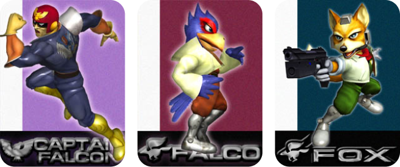

Gaming with the boiz
I played top lane for
UWaterloo’s collegiate LoL team
and peaked Challenger in solo queue. My go-to game right now is
Hades. Some of my favourite games include:

My Super Smash Bros. Melee mains: Captain Falcon, Falco, and Fox
GBA — Mario vs. Donkey Kong,
Pokémon Ruby/Sapphire/Emerald, Teenage Mutant Ninja Turtles
DS
— Kirby Super Star Ultra, Mario & Luigi: Bowser’s Inside Story,
Mario Kart DS, Pokémon Diamond/Pearl/Platinum, Spectrobes 1 and 2,
Super Mario 64 DS
PSP —
Crisis Core: Final Fantasy VII, Dissidia Final Fantasy, Ratchet &
Clank: Size Matters
N64 —
Kirby 64: The Crystal Shards, Mario Kart 64, Mario Party 3, Pokémon
Stadium 2, Super Mario 64, Star Fox 64, Super Smash Bros.
PS2
— Crash Bandicoot: The Wrath of Cortex, Lego Star Wars: The Video
Game, Medal of Honor: Frontline, Super Monkey Ball Deluxe
GC
— Mario Kart: Double Dash, Mario Party 7, Pikmin 2, Super Smash
Bros, Melee, Ty the Tasmanian Tiger 3: Night of the Quinkan
Wii
— Mario Kart Wii, One Piece: Unlimited Adventure, Super Mario
Galaxy, Super Monkey Ball: Banana Blitz, Super Paper Mario,
WarioWare: Smooth Moves
PS3
— Call of Duty: Black Ops 1 and 2, Castlevania: Lords of Shadow,
Final Fantasy XIII, inFAMOUS, The Elder Scrolls V: Skyrim
PC
— Among Us, Enter the Gungeon, Ghostrunner, Hades, Inside, Katana
Zero, League of Legends, MapleStory, Minecraft, The Binding of
Isaac, Yu-Gi-Oh! Duel Links